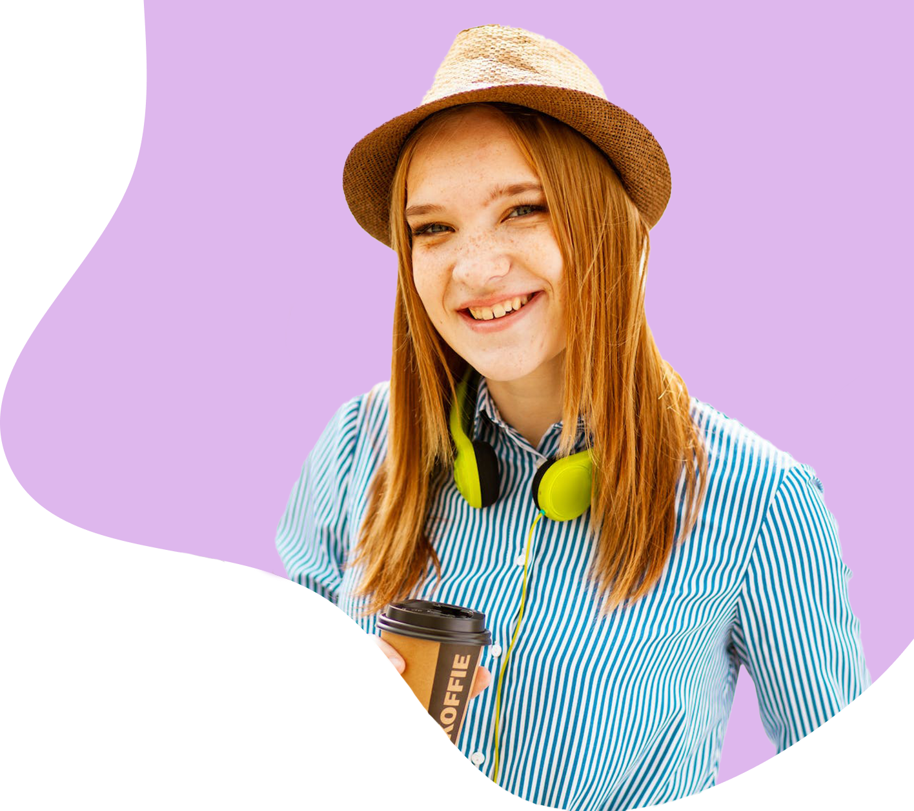

Hello, I'm
Lauren Petersen
Front-end Developer | UI/UX Designer
Hello! I'm Lauren Petersen, a passionate and dynamic Front-end Developer and UI/UX designer with a keen eye for detail in creating seamless and visually engaging digital experiences.
Projects
LinkedIn
